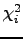
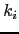
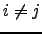
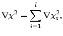
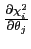
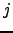
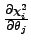

Next: Construction of the Hessian Up: Construction of the values, Previous: The sum of chi-squared Contents Index
|
 |
The construction of the gradient is significantly different for the models
 ,
,
 ,
,
 , and
, and
 . In Figure
. In Figure  the construction of the chi-squared gradient
for the global model
the construction of the chi-squared gradient
for the global model
 is demonstrated. In this case
is demonstrated. In this case
where
is the vector of partial derivatives of the chi-squared equation 
for the residue  . The length of this vector is
. The length of this vector is
|  | (theparentequation.12) |
with each position of the vector  equal to  where each  is a parameter of the model.
The construction of the gradient
for the model
 is simply a subset of that of
is simply a subset of that of
 . This is demonstrated in Figure
. This is demonstrated in Figure  by simply taking the component of the gradient
denoted by the symbol
by simply taking the component of the gradient
denoted by the symbol
 (the orange blocks) and summing these for all residues. This sum is given by (
(the orange blocks) and summing these for all residues. This sum is given by ( ) and
) and
|  | (theparentequation.13) |
For the parameter set
 , which consists of the local
, which consists of the local  parameter and the model-free parameters of a single residue, the gradient
for the residue
parameter and the model-free parameters of a single residue, the gradient
for the residue  is simply the combination of the single orange block and single yellow block of the index
is simply the combination of the single orange block and single yellow block of the index  (Figure
(Figure  ).
).
The model-free parameter set
 is even simpler. In Figure
is even simpler. In Figure  the gradient
is simply the vector denoted by the single yellow block for the residue
the gradient
is simply the vector denoted by the single yellow block for the residue  .
.